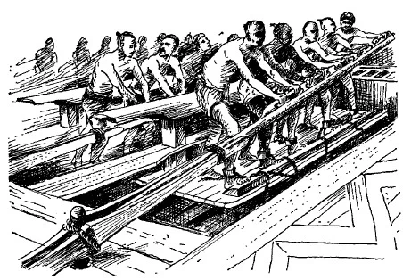
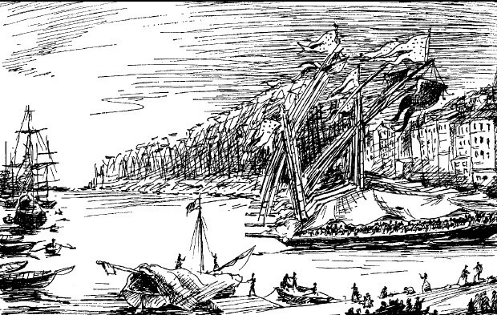

Мы уже несколько раз в предыдущих постах говорили о необыкновенной «перенаселенности галер». Осветим этот вопрос несколько более подробно, привлекая для большей достоверности свидетельства людей, лично побывавших на борту галер.

Шевалье Баррас де ла Пенн, командир эскадры галер Людовика XIV, а с 1729 г. – комендант порта Марсель, так описывает свое первое появление на галере:
«Те, кто видит галеру в первый раз, поражен обилием людей; в Европе бесконечно много населенных пунктов, которые не насчитывают равное этому число жителей. Но основная причина этого удивления не в количестве людей, а в том, что они собраны на таком ограниченном пространстве. Многие из них не имеют достаточно места, чтобы вытянуться во всю длину во время сна, так как на одну банку приходится семь человек, т.е. на пространство около 10 футов длины и 4 фута ширины (около 3 х 1,2 м). На баке можно видеть около тридцати матросов, жизненное пространство которых – палуба платформы на носу галеры размерами 10 х 8 футов. Капитан и офицеры галеры, которые размещаются на корме, имеют больше места, но все же напрашивается их сравнение с Диогеном в его бочке…
Когда безжалостное Ливийское море настигает эти галеры у берегов Италии, когда мистраль поднимает пенные валы в Лионском заливе, когда влажный восточный ветер из Сирии прижимает их к прибрежным скалам, - каждый раз это угрожает жизни на борту галеры, суровой жизни отверженных. Скрип блоков и снастей такелажа, громкие крики матросов, жуткие проклятия рабов, треск рангоута, смешивающийся с лязгом цепей и ревом штормового ветра вызывает ужас в сердцах даже самых бесстрашных людей. Дождь, шквал, молнии, которые обычно сопровождают ужасные штормы в этих местах, волны, которые перекатываются через палубу, довершают эту картину страданий, и хотя обращение к молитве не свойственно людям на борту галеры, вы слышите здесь общее обращение к богу, ко всем святым. Впрочем, едва ли что остается от упоминаний бога и святых, когда опасность минует.
Но и спокойное море не приносит облегчения. Над галерой стоит такой смрад, что от него невозможно никуда деться, несмотря на табак, который каждый вынужден затыкать себе в ноздри с раннего утра и до поздней ночи.»
Таким образом, сказать, что полностью укомплектованная галера была перенаселена, - значит преуменьшить истинное положение дел. Однако следует принимать во внимание, что единственным периодом, когда все офицеры, солдаты, члены экипажа и гребцы находились на борту был период нахождения галеры в море во время кампании; офицеры, члены экипажа и гребцы не спали в море, хотя знаменитые своей ленью солдаты обычно предавались сну.
Находясь в кампании, галеры вечером обычно направлялись в какую-нибудь гавань. Если прибрежный район был малонаселенным либо находящиеся поблизости городки были маленькими и бедными, не позволяющими стать на постой, гребцы собирали для офицеров койки. С относительной легкостью койки устанавливались на стойках как раз над банками, напоминая столы около трех футов в ширину и шести футов в длину; под каждой койкой спала одна из банок гребцов. Матрасы из шерсти или конского волоса приносили из трюма и размещали на коечных досках, затем стелили простыни и одеяла. Если шел дождь, как это часто случалось, над каждой койкой устанавливался полог с помощью веревок и блоков, прикрепленных к большому тенту, который поднимался в случае плохой погоды, чтобы прикрыть галеру полностью. В результате получалось три или четыре (самое большое полдюжины) маленьких тентов, натянутых под большим тентом. Каждый офицер имел «постель, приготовленную для ангела» («le lit à l'égal du meilleur lit d'ange»), говорил Мартель, который помогал устанавливать подобные постели, но сам спал на палубе ниже. «Устроенная, возможно для ангела, но не для моряка!»
Это рутинная установка коек выполнялась быстро, так что офицеры могли лечь спать в любое время, когда они пожелают. Гребцы ели свой хлеб с бобами, и с наступлением ночи дудки комитов давали команду каторжникам и рабам укладываться спать. На протяжении всей ночи ни один гребец «не мог ни вставать, ни говорить, ни даже шевелиться. Если один из них собирался пойти в сторону [носа галеры] для отправления естественных надобностей, он должен был крикнуть ‘á la bande’, но мог пойти только в том случае, если дежурный охранник давал разрешение криком ‘va’ [иди]; [всю остальную] ночь на галере царила глубокая тишина, как если бы на галере никого не было.» (Marteilhe, Memoires, 234.) На носу галеры, не покрытом большим тентом, матросы иногда спали под плащами. Солдаты дремали вдоль фальшборта. Гребцы спали на палубе или на своих банках, устраиваясь как могли, довольные уже тем, что им не приходится бороться за место с внушительных размеров вальком весла в отведенном им ограниченном пространстве. В обычных условиях офицеры и члены экипажа, за исключением комитов и охраны, спали на берегу, обычно в Марселе, когда галеры были пришвартованы в порту.

Следовательно, осужденные и рабы, дежурная охрана и несколько других моряков были единственными, кто должен был терпеть перенаселенные условия на борту – они единственные переносили круглый год и запахи, и вшей, и блох; только они хорошо знали дымное, скудно освещенное лампами чрево больших тентов, которые противостояли зимним ветрам и пронизывающему холоду; только они глотали бобовый суп, приготовленный на камбузе (fougon), размеры которого составляли примерно восемь на девять футов, и на котором иногда готовили пищу для более чем 400 человек.
В дальнейшем мы еще немного поговорим о жизни на борту галер.